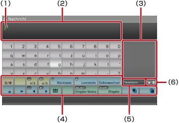
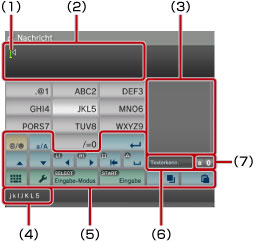

Informationen zum XMB™-Menü > Verwenden der Tastatur
Verwenden der Tastatur
Die Tastatur wird automatisch angezeigt, wann immer die Eingabe von Text erforderlich ist. In den Anweisungen wird davon ausgegangen, dass Sie die deutsche Tastatur verwenden. Informationen zum Verwenden von Tastaturen anderer Sprachen finden Sie im Benutzerhandbuch zur jeweiligen Sprache.

(1) |
Cursor |
|---|---|
(2) |
Texteingabefeld |
(3) |
Hier werden Auswahlmöglichkeiten für die Texterkennungsfunktion angezeigt |
(4) |
Funktionstasten |
(5) |
Wird angezeigt, wenn die Texterkennungsfunktion aktiviert ist |
(6) |
Anzeige für den Eingabemodus |
Liste der Tasten
Welche Tasten angezeigt werden, hängt vom Eingabemodus und anderen Bedingungen ab.
 |
Fügt ein Symbol oder Emoticon ein |
|---|---|
 / /  |
Wechseln des Typs der einzugebenden Zeichen |
| Verschieben des Cursors | |
| Löschen des Zeichens links vom Cursor | |
| Einfügen eines Leerzeichens | |
| Einfügen eines Zeilenumbruchs | |
 / /  |
Kopieren oder Einfügen von Text |
 |
Wechseln zur Mini-Tastatur |
| Wechseln des Eingabe-Modus | |
| Bestätigen der getippten, aber noch nicht eingegebenen Zeichen/Ausblenden der Tastatur |
Eingeben von Zeichen
Bei der Texterkennungsfunktion geben Sie die ersten Buchstaben eines Worts ein und eine Liste von häufig verwendeten Wörtern, die mit diesen Buchstaben beginnen, wird angezeigt. Sie können dann mit den Richtungstasten das gewünschte Wort auswählen. Wenn die Texteingabe beendet ist, wählen Sie die Taste „Eingabe“, um die Tastatur auszublenden.
Anmerkungen
- Bei einigen Eingabemodi können Sie unter Umständen keine Emoticons verwenden.
- Die Sprachen, in der Sie Text eingeben können, sind die unterstützten Systemsprachen. Wenn als Systemsprache beispielsweise Französisch eingestellt ist, können Sie Text in Französisch eingeben. Sie können die Systemsprache unter
 (Einstellungen) >
(Einstellungen) >  (System-Einstellungen) > [Systemsprache] einstellen.
(System-Einstellungen) > [Systemsprache] einstellen. - Sie können den Inhalt des ganzen Textfeldes löschen, indem Sie die
 - + L1-Taste gleichzeitig drücken.
- + L1-Taste gleichzeitig drücken.
Verwenden einer angeschlossenen Tastatur
Sie können Text mit einer USB-Tastatur oder einer Bluetooth®-Tastatur (beide separat erhältlich) eingeben. Wenn der Texteingabebildschirm angezeigt wird, können Sie Text über die angeschlossene Tastatur und den Texteingabebildschirm eingeben, indem Sie eine beliebige Taste auf der angeschlossenen Tastatur drücken.
Anmerkungen
- Einzelheiten zum Anschließen einer Bluetooth®-Tastatur finden Sie unter (Einstellungen) >
 (Peripheriegeräte-Einstellungen) > [Bluetooth®-Geräte verwalten] in diesem Handbuch.
(Peripheriegeräte-Einstellungen) > [Bluetooth®-Geräte verwalten] in diesem Handbuch. - Wenn Sie eine angeschlossene Tastatur verwenden, steht die Texterkennungsfunktion nicht zur Verfügung.
- Sie können mit ALT + ENTER einen Zeilenumbruch in das Textfeld einfügen. Sie können einen Zeilenumbruch nur in bestimmten Fällen eingeben, z. B. wenn Sie in der Kategorie
 (Freunde) eine Nachricht schreiben.
(Freunde) eine Nachricht schreiben. - Sie können den Inhalt des ganzen Textfeldes löschen, indem Sie die UMSCHALTTASTE + RÜCKTASTE gleichzeitig drücken.
- Sie können kopierten Text mit Strg + V einfügen. Dabei wird immer der zuletzt kopierte Text eingefügt.
Verwenden der Mini-Tastatur
Wenn Sie bei einer Tastatur in normaler Größe auswählen, wird die Mini-Tastatur angezeigt. Auf der Mini-Tastatur ist eine einzelne Taste mit mehreren Zeichen belegt.

(1) |
Cursor |
|---|---|
(2) |
Texteingabefeld |
(3) |
Hier werden Auswahlmöglichkeiten für die Texterkennungsfunktion angezeigt |
(4) |
Zeigt die Zeichen an, die mit der ausgewählten Taste eingegeben werden können. |
(5) |
Funktionstasten |
(6) |
Wird angezeigt, wenn die Texterkennungsfunktion aktiviert ist |
(7) |
Anzeige für den Eingabemodus |
 -Taste wechselt das Zeichen, das eingegeben werden kann. Wenn Sie beispielsweise [L] eingeben wollen, wählen Sie
-Taste wechselt das Zeichen, das eingegeben werden kann. Wenn Sie beispielsweise [L] eingeben wollen, wählen Sie  und drücken die
und drücken die  den Cursor, so dass er hinter [L] steht. Wählen Sie dann
den Cursor, so dass er hinter [L] steht. Wählen Sie dann Anmerkung
Sie können für die Texteingabe auch die Methode mit einmaligem Drücken von Tasten verwenden. Wechseln Sie mit der Taste „Optionen“ die Texteingabemethode. Beim einmaligen Drücken der Tasten werden die Wörter, die sich aus der Kombination eines Buchstabens (oder einer Zahl) auf den einzelnen ausgewählten Tasten erstellen lassen, als Auswahlmöglichkeiten der Texterkennungsfunktion angezeigt. Wenn Sie beispielsweise die Taste „DEF3“ auswählen, werden Wörter, die mit d, e, f oder 3 beginnen, im Fenster mit den Auswahlmöglichkeiten rechts neben der Bildschirmtastatur angezeigt. Wenn das Symbol „>“ angezeigt wird, geben Sie weitere Buchstaben ein, bis entsprechende Auswahlmöglichkeiten angezeigt werden.
Liste der Tasten
Welche Tasten angezeigt werden, hängt vom Eingabemodus und anderen Bedingungen ab.
 |
Einfügen eines Symbols |
|---|---|
 |
Umschalten zwischen Groß- und Kleinbuchstaben |
 |
Einfügen eines Zeilenumbruchs |
| Bewegen des Cursors | |
 |
Löschen des Zeichens links vom Cursor |
 |
Einfügen eines Leerzeichens |
 / /  |
Kopieren oder Einfügen von Text |
 |
Wechseln zur Tastatur in normaler Größe |
 |
Aufrufen des Menüs „Optionen“ |
| Wechseln des Eingabemodus | |
| Bestätigen der getippten, aber noch nicht eingegebenen Zeichen/Ausblenden der Tastatur |